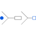

MultiStarResistanceResistance connection of star points |

|
Diagram
{kind=link}
Information
This information is part of the Modelica Standard Library maintained by the Modelica Association.
Multi star points are connected by resistors. This model is required to operate multi phase systems with even phase numbers to avoid ideal connections of start points of base systems; see multi phase guidelines.
Parameters (1)
| R |
Value: 1e6 Type: Resistance (Ω) Description: Insulation resistance between base systems |
|---|
Connectors (2)
| plug |
Type: PositivePlug |
|
|---|---|---|
| pin |
Type: NegativePin |
Components (3)
Used in Examples (3)
|
Modelica.Electrical.PowerConverters.Examples.ACDC.RectifierBridge2mPulse
2*m pulse diode rectifier bridge with resistive load |
|
|
Modelica.Electrical.PowerConverters.Examples.ACDC.RectifierBridge2mPulse
2*m pulse half controlled rectifier bridge with resistive load |
|
|
ThyristorBridge2mPulse_DC_Drive Modelica.Electrical.PowerConverters.Examples.ACDC.RectifierBridge2mPulse
2*m pulse thyristor bridge feeding a DC drive |
Used in Components (1)
|
Modelica.Electrical.PowerConverters.Examples.ACDC.ExampleTemplates
Template of 2*m pulse bridge thyristor rectifier |